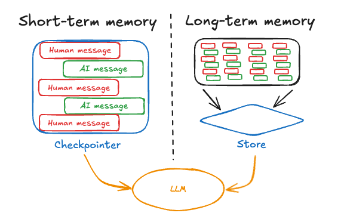
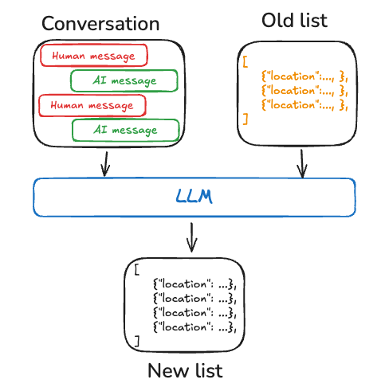

Memory¶
Memory is a system that remembers information about previous interactions. For AI agents, memory is crucial because it lets them remember previous interactions, learn from feedback, and adapt to user preferences. As agents tackle more complex tasks with numerous user interactions, this capability becomes essential for both efficiency and user satisfaction.
This conceptual guide covers two types of memory, based on their recall scope:
-
Short-term memory, or thread-scoped memory, tracks the ongoing conversation by maintaining message history within a session. LangGraph manages short-term memory as a part of your agent's state. State is persisted to a database using a checkpointer so the thread can be resumed at any time. Short-term memory updates when the graph is invoked or a step is completed, and the State is read at the start of each step.
-
Long-term memory stores user-specific or application-level data across sessions and is shared across conversational threads. It can be recalled at any time and in any thread. Memories are scoped to any custom namespace, not just within a single thread ID. LangGraph provides stores (reference doc) to let you save and recall long-term memories.

Short-term memory¶
Short-term memory lets your application remember previous interactions within a single thread or conversation. A thread organizes multiple interactions in a session, similar to the way email groups messages in a single conversation.
LangGraph manages short-term memory as part of the agent's state, persisted via thread-scoped checkpoints. This state can normally include the conversation history along with other stateful data, such as uploaded files, retrieved documents, or generated artifacts. By storing these in the graph's state, the bot can access the full context for a given conversation while maintaining separation between different threads.
Manage short-term memory¶
Conversation history is the most common form of short-term memory, and long conversations pose a challenge to today's LLMs. A full history may not fit inside an LLM's context window, resulting in an irrecoverable error. Even if your LLM supports the full context length, most LLMs still perform poorly over long contexts. They get "distracted" by stale or off-topic content, all while suffering from slower response times and higher costs.
Chat models accept context using messages, which include developer provided instructions (a system message) and user inputs (human messages). In chat applications, messages alternate between human inputs and model responses, resulting in a list of messages that grows longer over time. Because context windows are limited and token-rich message lists can be costly, many applications can benefit from using techniques to manually remove or forget stale information.

For more information on common techniques for managing messages, see the Add and manage memory guide.
Long-term memory¶
Long-term memory in LangGraph allows systems to retain information across different conversations or sessions. Unlike short-term memory, which is thread-scoped, long-term memory is saved within custom "namespaces."
Long-term memory is a complex challenge without a one-size-fits-all solution. However, the following questions provide a framework to help you navigate the different techniques:
-
What is the type of memory? Humans use memories to remember facts (semantic memory), experiences (episodic memory), and rules (procedural memory). AI agents can use memory in the same ways. For example, AI agents can use memory to remember specific facts about a user to accomplish a task.
-
When do you want to update memories? Memory can be updated as part of an agent's application logic (e.g., "on the hot path"). In this case, the agent typically decides to remember facts before responding to a user. Alternatively, memory can be updated as a background task (logic that runs in the background / asynchronously and generates memories). We explain the tradeoffs between these approaches in the section below.
Memory types¶
Different applications require various types of memory. Although the analogy isn't perfect, examining human memory types can be insightful. Some research (e.g., the CoALA paper) have even mapped these human memory types to those used in AI agents.
| Memory Type | What is Stored | Human Example | Agent Example |
|---|---|---|---|
| Semantic | Facts | Things I learned in school | Facts about a user |
| Episodic | Experiences | Things I did | Past agent actions |
| Procedural | Instructions | Instincts or motor skills | Agent system prompt |
Semantic memory¶
Semantic memory, both in humans and AI agents, involves the retention of specific facts and concepts. In humans, it can include information learned in school and the understanding of concepts and their relationships. For AI agents, semantic memory is often used to personalize applications by remembering facts or concepts from past interactions.
Note
Semantic memory is different from "semantic search," which is a technique for finding similar content using "meaning" (usually as embeddings). Semantic memory is a term from psychology, referring to storing facts and knowledge, while semantic search is a method for retrieving information based on meaning rather than exact matches.
Profile¶
Semantic memories can be managed in different ways. For example, memories can be a single, continuously updated "profile" of well-scoped and specific information about a user, organization, or other entity (including the agent itself). A profile is generally just a JSON document with various key-value pairs you've selected to represent your domain.
When remembering a profile, you will want to make sure that you are updating the profile each time. As a result, you will want to pass in the previous profile and ask the model to generate a new profile (or some JSON patch to apply to the old profile). This can be become error-prone as the profile gets larger, and may benefit from splitting a profile into multiple documents or strict decoding when generating documents to ensure the memory schemas remains valid.

Collection¶
Alternatively, memories can be a collection of documents that are continuously updated and extended over time. Each individual memory can be more narrowly scoped and easier to generate, which means that you're less likely to lose information over time. It's easier for an LLM to generate new objects for new information than reconcile new information with an existing profile. As a result, a document collection tends to lead to higher recall downstream.
However, this shifts some complexity memory updating. The model must now delete or update existing items in the list, which can be tricky. In addition, some models may default to over-inserting and others may default to over-updating. See the Trustcall package for one way to manage this and consider evaluation (e.g., with a tool like LangSmith) to help you tune the behavior.
Working with document collections also shifts complexity to memory search over the list. The Store currently supports both semantic search and filtering by content.
Finally, using a collection of memories can make it challenging to provide comprehensive context to the model. While individual memories may follow a specific schema, this structure might not capture the full context or relationships between memories. As a result, when using these memories to generate responses, the model may lack important contextual information that would be more readily available in a unified profile approach.

Regardless of memory management approach, the central point is that the agent will use the semantic memories to ground its responses, which often leads to more personalized and relevant interactions.
Episodic memory¶
Episodic memory, in both humans and AI agents, involves recalling past events or actions. The CoALA paper frames this well: facts can be written to semantic memory, whereas experiences can be written to episodic memory. For AI agents, episodic memory is often used to help an agent remember how to accomplish a task.
:::python In practice, episodic memories are often implemented through few-shot example prompting, where agents learn from past sequences to perform tasks correctly. Sometimes it's easier to "show" than "tell" and LLMs learn well from examples. Few-shot learning lets you "program" your LLM by updating the prompt with input-output examples to illustrate the intended behavior. While various best-practices can be used to generate few-shot examples, often the challenge lies in selecting the most relevant examples based on user input. :::
:::js In practice, episodic memories are often implemented through few-shot example prompting, where agents learn from past sequences to perform tasks correctly. Sometimes it's easier to "show" than "tell" and LLMs learn well from examples. Few-shot learning lets you "program" your LLM by updating the prompt with input-output examples to illustrate the intended behavior. While various best-practices can be used to generate few-shot examples, often the challenge lies in selecting the most relevant examples based on user input. :::
:::python Note that the memory store is just one way to store data as few-shot examples. If you want to have more developer involvement, or tie few-shots more closely to your evaluation harness, you can also use a LangSmith Dataset to store your data. Then dynamic few-shot example selectors can be used out-of-the box to achieve this same goal. LangSmith will index the dataset for you and enable retrieval of few shot examples that are most relevant to the user input based upon keyword similarity (using a BM25-like algorithm for keyword based similarity).
See this how-to video for example usage of dynamic few-shot example selection in LangSmith. Also, see this blog post showcasing few-shot prompting to improve tool calling performance and this blog post using few-shot example to align an LLMs to human preferences. :::
:::js Note that the memory store is just one way to store data as few-shot examples. If you want to have more developer involvement, or tie few-shots more closely to your evaluation harness, you can also use a LangSmith Dataset to store your data. Then dynamic few-shot example selectors can be used out-of-the box to achieve this same goal. LangSmith will index the dataset for you and enable retrieval of few shot examples that are most relevant to the user input based upon keyword similarity.
See this how-to video for example usage of dynamic few-shot example selection in LangSmith. Also, see this blog post showcasing few-shot prompting to improve tool calling performance and this blog post using few-shot example to align an LLMs to human preferences. :::
Procedural memory¶
Procedural memory, in both humans and AI agents, involves remembering the rules used to perform tasks. In humans, procedural memory is like the internalized knowledge of how to perform tasks, such as riding a bike via basic motor skills and balance. Episodic memory, on the other hand, involves recalling specific experiences, such as the first time you successfully rode a bike without training wheels or a memorable bike ride through a scenic route. For AI agents, procedural memory is a combination of model weights, agent code, and agent's prompt that collectively determine the agent's functionality.
In practice, it is fairly uncommon for agents to modify their model weights or rewrite their code. However, it is more common for agents to modify their own prompts.
One effective approach to refining an agent's instructions is through "Reflection" or meta-prompting. This involves prompting the agent with its current instructions (e.g., the system prompt) along with recent conversations or explicit user feedback. The agent then refines its own instructions based on this input. This method is particularly useful for tasks where instructions are challenging to specify upfront, as it allows the agent to learn and adapt from its interactions.
For example, we built a Tweet generator using external feedback and prompt re-writing to produce high-quality paper summaries for Twitter. In this case, the specific summarization prompt was difficult to specify a priori, but it was fairly easy for a user to critique the generated Tweets and provide feedback on how to improve the summarization process.
The below pseudo-code shows how you might implement this with the LangGraph memory store, using the store to save a prompt, the update_instructions node to get the current prompt (as well as feedback from the conversation with the user captured in state["messages"]), update the prompt, and save the new prompt back to the store. Then, the call_model get the updated prompt from the store and uses it to generate a response.
:::python
# Node that *uses* the instructions
def call_model(state: State, store: BaseStore):
namespace = ("agent_instructions", )
instructions = store.get(namespace, key="agent_a")[0]
# Application logic
prompt = prompt_template.format(instructions=instructions.value["instructions"])
...
# Node that updates instructions
def update_instructions(state: State, store: BaseStore):
namespace = ("instructions",)
current_instructions = store.search(namespace)[0]
# Memory logic
prompt = prompt_template.format(instructions=current_instructions.value["instructions"], conversation=state["messages"])
output = llm.invoke(prompt)
new_instructions = output['new_instructions']
store.put(("agent_instructions",), "agent_a", {"instructions": new_instructions})
...
:::js
// Node that *uses* the instructions
const callModel = async (state: State, store: BaseStore) => {
const namespace = ["agent_instructions"];
const instructions = await store.get(namespace, "agent_a");
// Application logic
const prompt = promptTemplate.format({
instructions: instructions[0].value.instructions
});
// ...
};
// Node that updates instructions
const updateInstructions = async (state: State, store: BaseStore) => {
const namespace = ["instructions"];
const currentInstructions = await store.search(namespace);
// Memory logic
const prompt = promptTemplate.format({
instructions: currentInstructions[0].value.instructions,
conversation: state.messages
});
const output = await llm.invoke(prompt);
const newInstructions = output.new_instructions;
await store.put(["agent_instructions"], "agent_a", {
instructions: newInstructions
});
// ...
};

Writing memories¶
There are two primary methods for agents to write memories: "in the hot path" and "in the background".

In the hot path¶
Creating memories during runtime offers both advantages and challenges. On the positive side, this approach allows for real-time updates, making new memories immediately available for use in subsequent interactions. It also enables transparency, as users can be notified when memories are created and stored.
However, this method also presents challenges. It may increase complexity if the agent requires a new tool to decide what to commit to memory. In addition, the process of reasoning about what to save to memory can impact agent latency. Finally, the agent must multitask between memory creation and its other responsibilities, potentially affecting the quantity and quality of memories created.
As an example, ChatGPT uses a save_memories tool to upsert memories as content strings, deciding whether and how to use this tool with each user message. See our memory-agent template as an reference implementation.
In the background¶
Creating memories as a separate background task offers several advantages. It eliminates latency in the primary application, separates application logic from memory management, and allows for more focused task completion by the agent. This approach also provides flexibility in timing memory creation to avoid redundant work.
However, this method has its own challenges. Determining the frequency of memory writing becomes crucial, as infrequent updates may leave other threads without new context. Deciding when to trigger memory formation is also important. Common strategies include scheduling after a set time period (with rescheduling if new events occur), using a cron schedule, or allowing manual triggers by users or the application logic.
See our memory-service template as an reference implementation.
Memory storage¶
LangGraph stores long-term memories as JSON documents in a store. Each memory is organized under a custom namespace (similar to a folder) and a distinct key (like a file name). Namespaces often include user or org IDs or other labels that makes it easier to organize information. This structure enables hierarchical organization of memories. Cross-namespace searching is then supported through content filters.
:::python
from langgraph.store.memory import InMemoryStore
def embed(texts: list[str]) -> list[list[float]]:
# Replace with an actual embedding function or LangChain embeddings object
return [[1.0, 2.0] * len(texts)]
# InMemoryStore saves data to an in-memory dictionary. Use a DB-backed store in production use.
store = InMemoryStore(index={"embed": embed, "dims": 2})
user_id = "my-user"
application_context = "chitchat"
namespace = (user_id, application_context)
store.put(
namespace,
"a-memory",
{
"rules": [
"User likes short, direct language",
"User only speaks English & python",
],
"my-key": "my-value",
},
)
# get the "memory" by ID
item = store.get(namespace, "a-memory")
# search for "memories" within this namespace, filtering on content equivalence, sorted by vector similarity
items = store.search(
namespace, filter={"my-key": "my-value"}, query="language preferences"
)
:::js
import { InMemoryStore } from "@langchain/langgraph";
const embed = (texts: string[]): number[][] => {
// Replace with an actual embedding function or LangChain embeddings object
return texts.map(() => [1.0, 2.0]);
};
// InMemoryStore saves data to an in-memory dictionary. Use a DB-backed store in production use.
const store = new InMemoryStore({ index: { embed, dims: 2 } });
const userId = "my-user";
const applicationContext = "chitchat";
const namespace = [userId, applicationContext];
await store.put(
namespace,
"a-memory",
{
rules: [
"User likes short, direct language",
"User only speaks English & TypeScript",
],
"my-key": "my-value",
}
);
// get the "memory" by ID
const item = await store.get(namespace, "a-memory");
// search for "memories" within this namespace, filtering on content equivalence, sorted by vector similarity
const items = await store.search(
namespace,
{
filter: { "my-key": "my-value" },
query: "language preferences"
}
);
For more information about the memory store, see the Persistence guide.